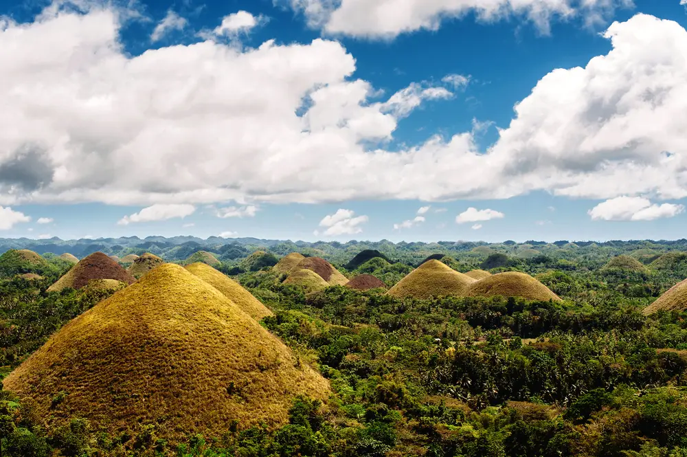

LES CHOCOLATES HILLS

L’histoire des Chocolate Hills commence il y a deux millions d’années. Sur cette surface alors baignée
par la mer, des couches successives de coquillages et de corail forment des petits monticules. Lorsque
les plaques tectoniques élèvent l’île de Bohol hors de l’eau, ces formations se retrouvent soumises aux
intempéries. Leur érosion progressive leur donnera l’aspect de petites collines rondouillettes.
En fait, si vous demandez à un enfant de vous dessiner une montagne, il y a de fortes chances qu’il
vous dresse le portrait d’une Chocolate Hill.
Aujourd’hui, s’il est interdit de randonner entre les Chocolate Hills, vous pouvez accéder à un mirador
pour admirer ces curieuses collines lors de votre séjour aux Philippines. Elles sont 1 268 à tapisser
l’île de Bohol, dessinant un paysage hors du commun.